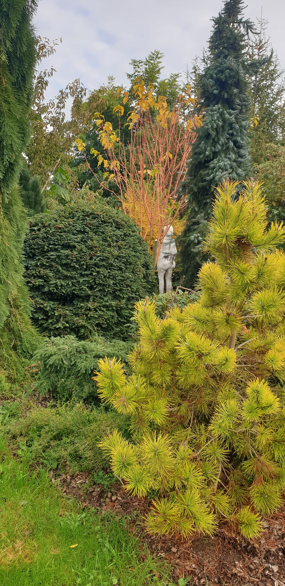
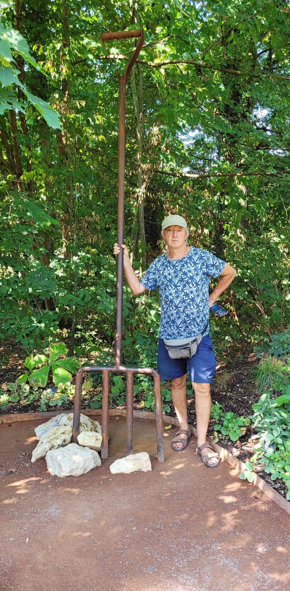
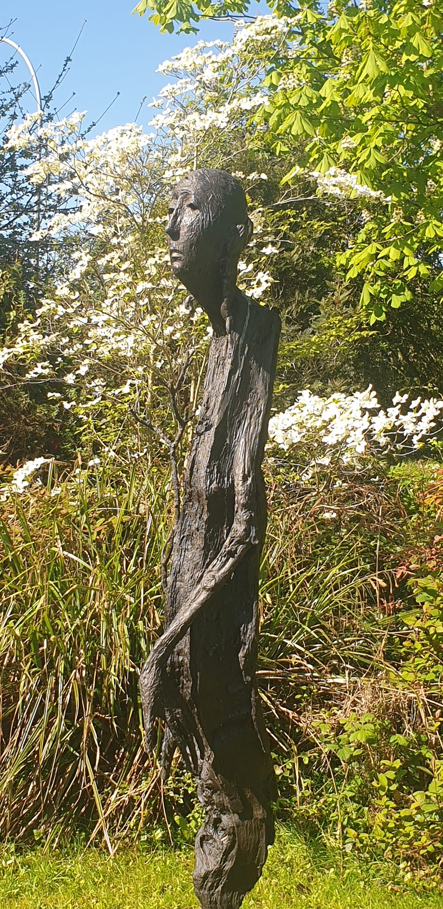

Bienvenue au Jardin habité de Saint Georges
Notre jardin vous ouvre ses portes quelques jours dans l'année. Profitez de ces occasions pour venir découvrir son ambiance et ses habitants.
Infos pratiques
Jours d'ouverture 2026 :
les dimanches 17 mai, 21 juin et 7 septembre
Horaires : 14h à 18h
Tarifs : Adultes 6€ / Enfants gratuits jusqu'à 18 ans
Adresse : 39 Grande Rue 50720 Saint Georges de Rouelley



Contact
Email : bernard.ventejou@wanadoo.fr
Téléphone : 06 73 01 55 36